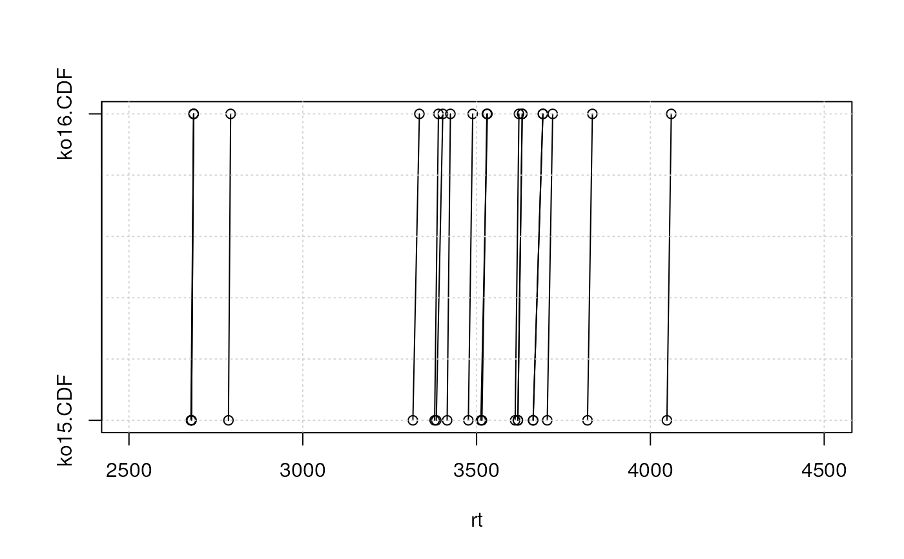
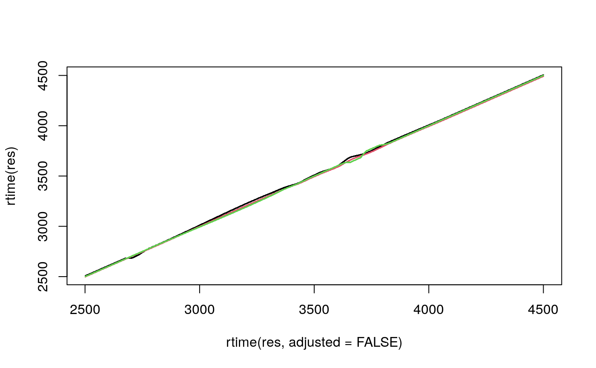

R/DataClasses.R, R/functions-Params.R, R/functions-XCMSnExp.R, and 2 more
adjustRtime-peakGroups.RdThis method performs retention time adjustment based on the
alignment of chromatographic peak groups present in all/most samples
(hence corresponding to house keeping compounds). First the retention
time deviation of these peak groups is described by fitting either a
polynomial (smooth = "loess") or a linear (
smooth = "linear") model to the data points. These models are
subsequently used to adjust the retention time of each spectrum in
each sample.
It is also possible to exclude certain samples within an experiment from
the estimation of the alignment models. The parameter subset
allows to define the indices of samples within object that should
be aligned. Samples not part of this subset are left out in the
estimation of the alignment models, but their retention times are
subsequently adjusted based on the alignment results of the closest sample
in subset (close in terms of position within the object).
Alignment could thus be performed on only real samples leaving out
e.g. blanks, which are then in turn adjusted based on the closest real
sample. Here it is up to the user to ensure that the samples within
object are ordered correctly (e.g. by injection index).
How the non-subset samples are adjusted bases also on the parameter
subsetAdjust: with subsetAdjust = "previous", each non-subset
sample is adjusted based on the closest previous subset sample which results
in most cases with adjusted retention times of the non-subset sample being
identical to the subset sample on which the adjustment bases. The second,
default, option is to use subsetAdjust = "average" in which case
each non subset sample is adjusted based on the average retention time
adjustment from the previous and following subset sample. For the average
a weighted mean is used with weights being the inverse of the distance of
the non-subset sample to the subset samples used for alignment.
See also section Alignment of experiments including blanks in the xcms vignette for an example.
The PeakGroupsParam class allows to specify all
settings for the retention time adjustment based on house keeping
peak groups present in most samples.
Instances should be created with the PeakGroupsParam constructor.
adjustRtimePeakGroups returns the features (peak groups)
which would, depending on the provided PeakGroupsParam, be
selected for alignment/retention time correction.
minFraction,minFraction<-: getter and setter
for the minFraction slot of the object.
extraPeaks,extraPeaks<-: getter and setter
for the extraPeaks slot of the object.
smooth,smooth<-: getter and setter
for the smooth slot of the object.
span,span<-: getter and setter
for the span slot of the object.
family,family<-: getter and setter
for the family slot of the object.
peakGroupsMatrix,peakGroupsMatrix<-: getter and
setter for the peakGroupsMatrix slot of the object.
subset,subset<-: getter and
setter for the subset slot of the object.
subsetAdjust,subsetAdjust<-: getter and
setter for the subsetAdjust slot of the object.
adjustRtime,XCMSnExp,PeakGroupsParam:
performs retention time correction based on the alignment of peak groups
(features) found in all/most samples. The correction function identified
on these peak groups is applied to the retention time of all spectra in
the object, i.e. retention times of all spectra, also MS level > 1 are
adjusted.
PeakGroupsParam( minFraction = 0.9, extraPeaks = 1, smooth = "loess", span = 0.2, family = "gaussian", peakGroupsMatrix = matrix(nrow = 0, ncol = 0), subset = integer(), subsetAdjust = c("average", "previous") ) adjustRtimePeakGroups(object, param = PeakGroupsParam(), msLevel = 1L) # S4 method for PeakGroupsParam minFraction(object) # S4 method for PeakGroupsParam minFraction(object) <- value # S4 method for PeakGroupsParam extraPeaks(object) # S4 method for PeakGroupsParam extraPeaks(object) <- value # S4 method for PeakGroupsParam smooth(x) # S4 method for PeakGroupsParam smooth(object) <- value # S4 method for PeakGroupsParam span(object) # S4 method for PeakGroupsParam span(object) <- value # S4 method for PeakGroupsParam family(object) # S4 method for PeakGroupsParam family(object) <- value # S4 method for PeakGroupsParam peakGroupsMatrix(object) # S4 method for PeakGroupsParam peakGroupsMatrix(object) <- value # S4 method for PeakGroupsParam subset(x) # S4 method for PeakGroupsParam subset(object) <- value # S4 method for PeakGroupsParam subsetAdjust(object) # S4 method for PeakGroupsParam subsetAdjust(object) <- value # S4 method for XCMSnExp,PeakGroupsParam adjustRtime(object, param, msLevel = 1L)
| minFraction |
|
|---|---|
| extraPeaks |
|
| smooth | character defining the function to be used, to interpolate
corrected retention times for all peak groups. Either |
| span |
|
| family | character defining the method to be used for loess smoothing.
Allowed values are |
| peakGroupsMatrix | optional |
| subset |
|
| subsetAdjust |
|
| object | For For all other methods: a |
| param | A |
| msLevel |
|
| value | The value for the slot. |
| x | a |
The PeakGroupsParam function returns a
PeakGroupsParam class instance with all of the settings
specified for retention time adjustment based on house keeping
features/peak groups.
For adjustRtimePeakGroups: a matrix, rows being
features, columns samples, of retention times. The features are ordered
by the median retention time across columns.
For adjustRtime: a XCMSnExp object with the
results of the retention time adjustment step. These can be accessed
with the adjustedRtime method. Retention time correction
does also adjust the retention time of the identified chromatographic
peaks (accessed via chromPeaks. Note that retention
time correction drops all previous alignment results from the result
object.
minFraction,extraPeaks,smooth,span,family,peakGroupsMatrix,subset,subsetAdjustSee corresponding parameter above.
These methods and classes are part of the updated and modernized
xcms user interface which will eventually replace the
group methods. All of the settings to the alignment
algorithm can be passed with a PeakGroupsParam object.
The matrix with the (raw) retention times of the peak groups used
in the alignment is added to the peakGroupsMatrix slot of the
PeakGroupsParam object that is stored into the corresponding
process history step (see processHistory for how
to access the process history).
adjustRtimePeakGroups is supposed to be called before the
sample alignment, but after a correspondence (peak grouping).
This method requires that a correspondence analysis has been performed
on the data, i.e. that grouped chromatographic peaks/features are present
(see groupChromPeaks for details).
Calling adjustRtime on an XCMSnExp object will cause all
peak grouping (correspondence) results and any previous retention time
adjustments to be dropped.
In some instances, the adjustRtime,XCMSnExp,PeakGroupsParam
re-adjusts adjusted retention times to ensure them being in the same
order than the raw (original) retention times.
Colin A. Smith, Elizabeth J. Want, Grace O'Maille, Ruben Abagyan and Gary Siuzdak. "XCMS: Processing Mass Spectrometry Data for Metabolite Profiling Using Nonlinear Peak Alignment, Matching, and Identification" Anal. Chem. 2006, 78:779-787.
The do_adjustRtime_peakGroups core
API function and retcor.peakgroups for the old user
interface.
plotAdjustedRtime for visualization of alignment results.
XCMSnExp for the object containing the results of
the alignment.
Other retention time correction methods:
adjustRtime-obiwarp,
adjustRtime()
Colin Smith, Johannes Rainer
## Load a test data set with detected peaks data(faahko_sub) ## Update the path to the files for the local system dirname(faahko_sub) <- system.file("cdf/KO", package = "faahKO") res <- faahko_sub ## Disable parallel processing for this example register(SerialParam()) head(chromPeaks(res))#> mz mzmin mzmax rt rtmin rtmax into intb maxo #> CP001 453.2 453.2 453.2 2506.073 2501.378 2527.982 1007409.0 1007380.8 38152 #> CP002 302.0 302.0 302.0 2617.185 2595.275 2640.659 687146.6 671297.8 30552 #> CP003 344.0 344.0 344.0 2679.783 2646.919 2709.517 5210015.9 5135916.9 152320 #> CP004 430.1 430.1 430.1 2681.348 2639.094 2712.647 2395840.3 2299899.6 65752 #> CP005 366.0 366.0 366.0 2679.783 2642.224 2718.907 3365174.0 3279468.3 79928 #> CP006 343.0 343.0 343.0 2678.218 2637.529 2712.647 24147443.2 23703761.7 672064 #> sn sample #> CP001 38151 1 #> CP002 46 1 #> CP003 68 1 #> CP004 42 1 #> CP005 49 1 #> CP006 87 1#> #> 1 2 3 #> 87 100 61## Performing the peak grouping using the "peak density" method. p <- PeakDensityParam(sampleGroups = c(1, 1, 1)) res <- groupChromPeaks(res, param = p)#>#>## Perform the retention time adjustment using peak groups found in both ## files. fgp <- PeakGroupsParam(minFraction = 1) ## Before running the alignment we can evaluate which features (peak groups) ## would be used based on the specified parameters. pkGrps <- adjustRtimePeakGroups(res, param = fgp) ## We can also plot these to evaluate if the peak groups span a large portion ## of the retention time range. plot(x = pkGrps[, 1], y = rep(1, nrow(pkGrps)), xlim = range(rtime(res)), ylim = c(1, 2), xlab = "rt", ylab = "", yaxt = "n")#>#> Warning: Span too small for 'loess' and the available number of peak groups, resetting to 0.21#> Warning: Adjusted retention times had to be re-adjusted for some files to ensure them being in the same order than the raw retention times. A call to 'dropAdjustedRtime' might thus fail to restore retention times of chromatographic peaks to their original values. Eventually consider to increase the value of the 'span' parameter.#>#>#> [1] FALSE## Plot the raw against the adjusted retention times. plot(rtime(res, adjusted = FALSE), rtime(res), pch = 16, cex = 0.25, col = fromFile(res))## Adjusterd retention times can be accessed using ## rtime(object, adjusted = TRUE) and adjustedRtime all.equal(rtime(res), adjustedRtime(res))#> [1] TRUE## To extract the retention times grouped by sample/file: rts <- rtime(res, bySample = TRUE)